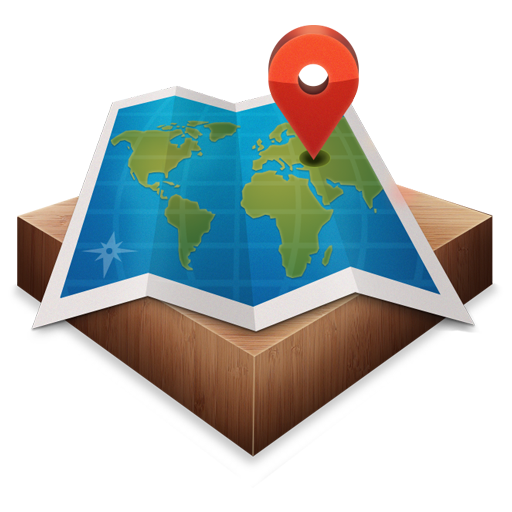

<ion-header>
  <ion-toolbar color="dark">
	<ion-buttons slot="start">
		<ion-back-button></ion-back-button>
	  </ion-buttons>
    <ion-title>Busquedas por Establecimiento</ion-title>
  </ion-toolbar>
</ion-header>

<ion-content>
  <div class="seccion" *ngIf="busquedas">
	<canvas id="estadisticas"></canvas>
 </div>
 <div class="seccion2">
	
 </div>
</ion-content>
